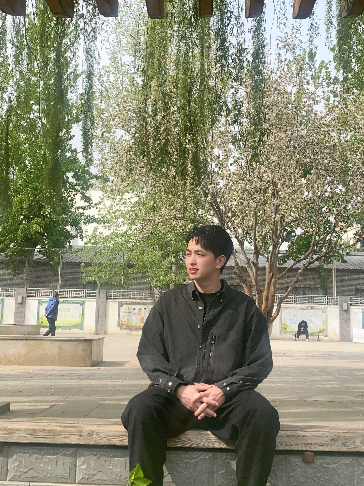

|
Xuekai Zhu
I am a Ph.D. student at Shanghai Jiao Tong University, co-supervised by
Zhouhan Lin and
Bowen Zhou.
Recent Open-Source Contributions:
Intern @ Microsoft Research (Redmond),
Shanghai AI Lab (InternLM Team),
BIGAI,
CoAI
I will graduate with my Ph.D. in June 2027 and am actively seeking opportunities on the job market this year and next. Please feel free to reach out!
Award:
- ACL 2023 Area Chair Award
- CCF-CBC 2021 Outstanding Paper Award
Email /
Google Scholar /
Twitter /
GitHub
|

|
How to Synthesize Text Data without Model Collapse?
Xuekai Zhu, Daixuan Cheng, Hengli Li, Kaiyan Zhang, Ermo Hua, Xingtai Lv, Ning Ding, Zhouhan Lin, Zilong Zheng, Bowen Zhou
ICML 2025
|
PaD: Program-aided Distillation Can Teach Small Models Reasoning Better than Chain-of-thought Fine-tuning
Xuekai Zhu, Biqing Qi, Kaiyan Zhang, Xinwei Long, Zhouhan Lin, Bowen Zhou
NAACL 2024 Oral
|
StoryTrans: Non-Parallel Story Author-Style Transfer with Discourse Representations and Content Enhancing
Xuekai Zhu*, Jian Guan*, Minlie Huang, Juan Liu
ACL 2023 Area Chair Award
|
|
{kind=link}